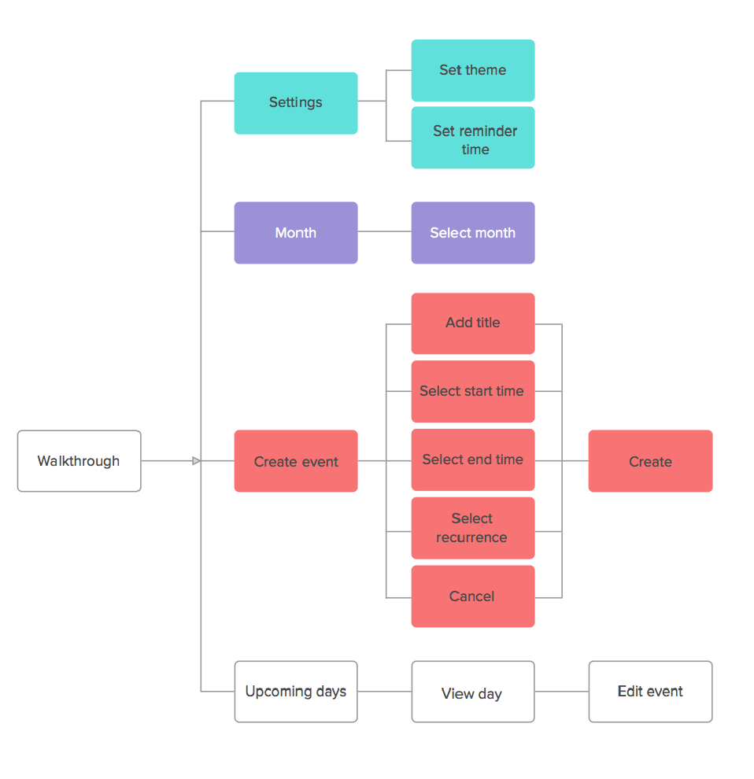

Overview
View is a calendar app that is designed to strip away overwhelming aspects of mobile calendars. My design approach entailed creating an experience that synced with our necessities and values instead of technology dictating our decisions. View defines a functional and valuable on the go experience that is simplistic and intuitive for what we need and want. My design practice focused on providing only necessary information instead of bombarding the user with confusing features that don't add any real value.
Strategy, Task Analysis, Define The Problem
Task analysis is a step-by-step depiction of the user's task from their perspective. If you cannot capture the true essence of the problem the best you can achieve is to solve the wrong problem. Perceptively, this technique is critical for successfully defining the problem and describing how users perform a task, not how they interact with the interface. Utilizing data research, competitor analysis and user feedback I determined that the majority of mobile calendar apps are aimed and built for power users, integrating countless functions yet all offer extremely complex interfaces and inefficient solutions. After brainstorming, ideation, and storyboards the concept I depicted was to create a calendar app that emphasizes functional value and user centric experiences in a minimalist design.
User Research
My initial research development involved mapping out a competitor analysis to derive a detailed insight on apps currently available on the market. My discovery phase was essential for the creation of an informed user experience and comprised of significant user and competitor research activities including feedback surveys and interviews. Understanding the user's desires, values, abilities and limitations allowed me to continuously build credible user observation and evaluation. Engaging users with questions allowed me to target what goals should be accomplished, which features are useful and how I can meet and implement such desires.
Epics, Design Stories
Epics depict an overview of the essential features in the storyline. These are broad user stories that helps portray a team’s decision strategy and will eventually be integrated into more specific user stories.
Design Stories:
Analysis
Use cases, storyboards, personas, scenarios, models
User Stories, Persona Development
User personas are hypothetical models established to identify actual user profiles, necessities and expectations in order to manifest the optimal user experience. Essentially, user personas are created to drive design and set a common understanding of the final user. What are the user needs, wants and limitations?
User Task Flow
Task flows are an essential tool to help visualize the journey of the system and design before we implement a certain feature. They allow us to interject the user into the flow system in order to validate whether the concept model complies with the user model.

Wireframes
A/B Testing
Split testing is a method of comparing two diverse versions of a prototype in order to pinpoint the optimal performer. Creating an A and B variant for user testing helps evaluate different variables that may be vague or need design changes. Observing the audience test and interact with the product helped validate and identify problem areas that needed adjustment. After numerous implementations and iterations two variations were narrowed down for user comparison and performance data.